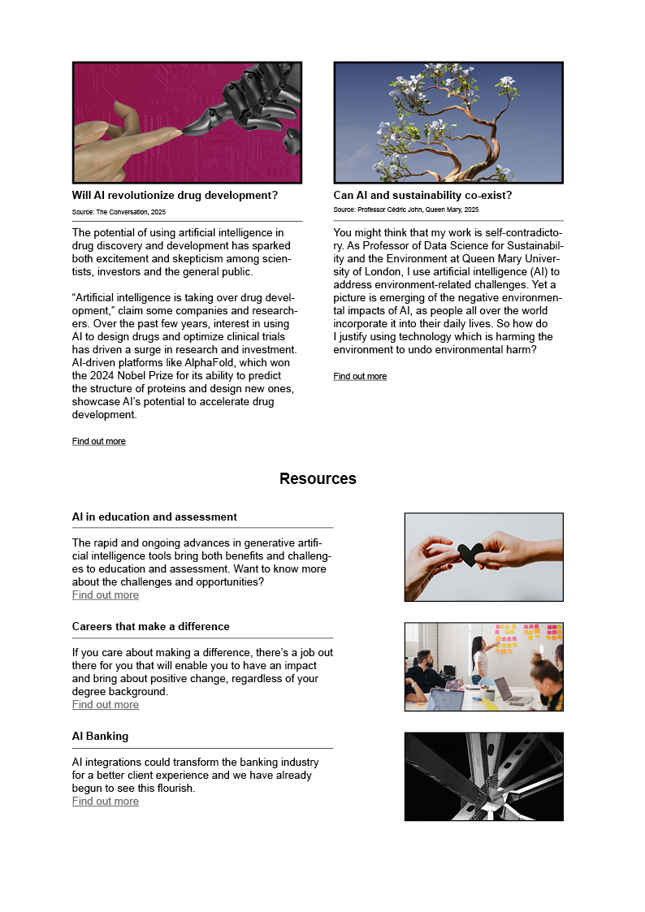
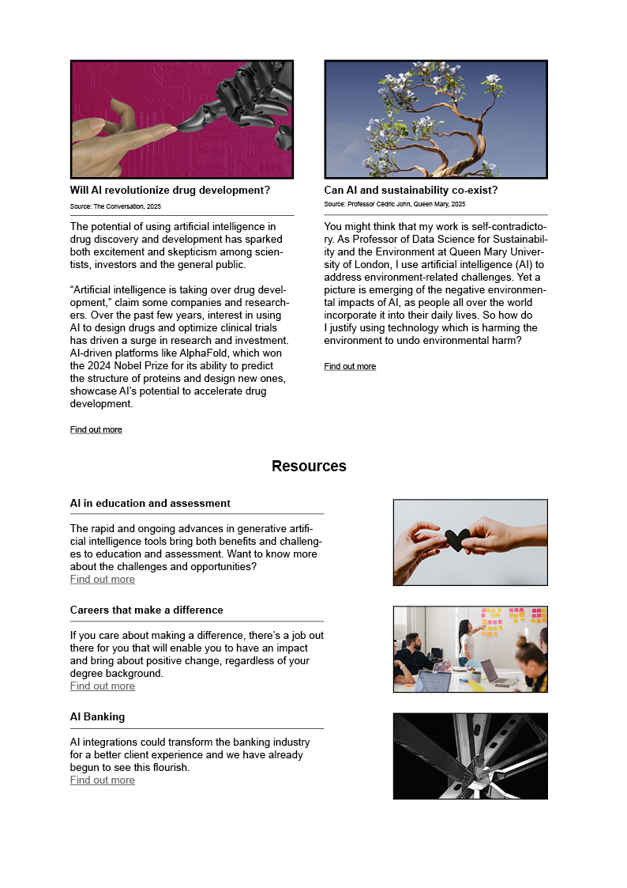

🧬 MA Project: What is scrying mirror? - AI vs Database
🧬 This project explores the importance of approaching AI critically, particularly given the growing trust in its ability to predict the future.
🧬 This project highlights my research skills and demonstrates my ability to translate them into visual communication.
🧬 Tools: Adobe Illustrator, Adobe Indesign, Adobe After Effect and Adobe Premiere Pro
🧬 Initial Idea 🧬
Idea 1: The rise of machine learning and AI
Idea 2: Critically view the growing power of AI
Idea 3: Trust in AI?
Idea 4: The AI Death Calculator - Digital divination
Idea 5: How can we see it critically?
🧬 Research 🧬
My research inspiration was from this ancient device, examining its historical origins dating back to the 16th century and contrasting it with its modern counterpart in AI computer programs. Critique is directed towards contemporary scrying mirrors, particularly those embedded within computer systems
🧬 Feedback 🧬
Read more human behavior books so I could find out more future prediction information.
Prototype: Present this case study in different media.
🧬 Colour Chosen 🧬

🧬 Interface Design 🧬
Translating stories onto the phone platform.

🧬 Infographic Design 🧬
Finishing all storytelling in one page: ensuring that all the information, narrative, and key points are conveyed concisely in a single visual layout.
🧬 Email Campaign 🧬
For internal communication regarding AI-related articles.
 

🧬 Interaction Design 🧬
Participants have a chance to communicate with the modern scrying mirror and ask for the future.
Click the link for more.
The question of "Do you trust the database-generated answer or the spontaneous answer from artificial intelligence?" is up for discussion. Numerous studies highlight AI’s significant potential in predicting future trends due to its ability to process vast datasets and recognize patterns beyond human capability. However, AI also encounters limitations related to the physical world, such as data quality, irregularity, and ethical concerns. Currently, the most reliable forecasts are likely to be achieved through a combination of AI and human expertise. This hybrid approach leverages the unique strengths of both, enabling us to navigate future uncertainties more effectively. This special synergy can not only guide individuals seeking direction in life but also offer therapeutic benefits, acting as a shelter for mental well-being.